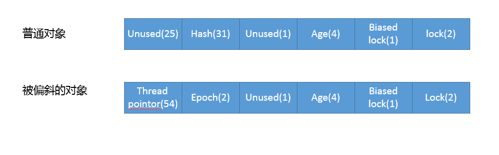
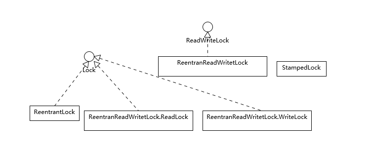

- 00 开篇词 以面试题为切入点，有效提升你的Java内功-极客时间.md
- 01 谈谈你对Java平台的理解？.md
- 02 Exception和Error有什么区别？-极客时间.md
- 03 谈谈final、finally、 finalize有什么不同？-极客时间.md
- 04 强引用、软引用、弱引用、幻象引用有什么区别？-极客时间.md
- 05 String、StringBuffer、StringBuilder有什么区别？-极客时间.md
- 06 动态代理是基于什么原理？-极客时间.md
- 07 int和Integer有什么区别？-极客时间.md
- 08 对比Vector、ArrayList、LinkedList有何区别？-极客时间.md
- 09 对比Hashtable、HashMap、TreeMap有什么不同？-极客时间.md
- 10 如何保证集合是线程安全的 ConcurrentHashMap如何实现高效地线程安全？-极客时间.md
- 11 Java提供了哪些IO方式？ NIO如何实现多路复用？-极客时间.md
- 12 Java有几种文件拷贝方式？哪一种最高效？-极客时间.md
- 13 谈谈接口和抽象类有什么区别？-极客时间.md
- 14 谈谈你知道的设计模式？-极客时间.md
- 15 synchronized和ReentrantLock有什么区别呢？-极客时间.md
- 16 synchronized底层如何实现？什么是锁的升级、降级？-极客时间.md
- 17 一个线程两次调用start()方法会出现什么情况？-极客时间.md
- 18 什么情况下Java程序会产生死锁？如何定位、修复？-极客时间.md
- 19 Java并发包提供了哪些并发工具类？-极客时间.md
- 20 并发包中的ConcurrentLinkedQueue和LinkedBlockingQueue有什么区别？-极客时间.md
- 21 Java并发类库提供的线程池有哪几种？ 分别有什么特点？-极客时间.md
- 22 AtomicInteger底层实现原理是什么？如何在自己的产品代码中应用CAS操作？-极客时间.md
- 23 请介绍类加载过程，什么是双亲委派模型？-极客时间.md
- 24 有哪些方法可以在运行时动态生成一个Java类？-极客时间.md
- 25 谈谈JVM内存区域的划分，哪些区域可能发生OutOfMemoryError-极客时间.md
- 26 如何监控和诊断JVM堆内和堆外内存使用？-极客时间.md
- 27 Java常见的垃圾收集器有哪些？-极客时间.md
- 28 谈谈你的GC调优思路-极客时间.md
- 29 Java内存模型中的happen-before是什么？-极客时间.md
- 30 Java程序运行在Docker等容器环境有哪些新问题？-极客时间.md
- 31 你了解Java应用开发中的注入攻击吗？-极客时间.md
- 32 如何写出安全的Java代码？-极客时间.md
- 33 后台服务出现明显“变慢”，谈谈你的诊断思路？-极客时间.md
- 34 有人说“Lambda能让Java程序慢30倍”，你怎么看？-极客时间.md
- 35 JVM优化Java代码时都做了什么？-极客时间.md
- 36 谈谈MySQL支持的事务隔离级别，以及悲观锁和乐观锁的原理和应用场景？-极客时间.md
- 37 谈谈Spring Bean的生命周期和作用域？-极客时间.md
- 38 对比Java标准NIO类库，你知道Netty是如何实现更高性能的吗？-极客时间.md
- 39 谈谈常用的分布式ID的设计方案？Snowflake是否受冬令时切换影响？-极客时间.md
- 周末福利 一份Java工程师必读书单-极客时间.md
- 周末福利 谈谈我对Java学习和面试的看法-极客时间.md
- 结束语 技术没有终点-极客时间.md
16 synchronized底层如何实现？什么是锁的升级、降级？-极客时间
我在【上一讲】对比和分析了 synchronized 和 ReentrantLock，算是专栏进入并发编程阶段的热身，相信你已经对线程安全，以及如何使用基本的同步机制有了基础，今天我们将深入了解 synchronize 底层机制，分析其他锁实现和应用场景。
今天我要问你的问题是 ，synchronized 底层如何实现？什么是锁的升级、降级？
典型回答
在回答这个问题前，先简单复习一下上一讲的知识点。synchronized 代码块是由一对儿 monitorenter/monitorexit 指令实现的，Monitor 对象是同步的基本实现单元。
在 Java 6 之前，Monitor 的实现完全是依靠操作系统内部的互斥锁，因为需要进行用户态到内核态的切换，所以同步操作是一个无差别的重量级操作。
现代的（Oracle）JDK 中，JVM 对此进行了大刀阔斧地改进，提供了三种不同的 Monitor 实现，也就是常说的三种不同的锁：偏斜锁（Biased Locking）、轻量级锁和重量级锁，大大改进了其性能。
所谓锁的升级、降级，就是 JVM 优化 synchronized 运行的机制，当 JVM 检测到不同的竞争状况时，会自动切换到适合的锁实现，这种切换就是锁的升级、降级。
当没有竞争出现时，默认会使用偏斜锁。JVM 会利用 CAS 操作（compare and swap），在对象头上的 Mark Word 部分设置线程 ID，以表示这个对象偏向于当前线程，所以并不涉及真正的互斥锁。这样做的假设是基于在很多应用场景中，大部分对象生命周期中最多会被一个线程锁定，使用偏斜锁可以降低无竞争开销。
如果有另外的线程试图锁定某个已经被偏斜过的对象，JVM 就需要撤销（revoke）偏斜锁，并切换到轻量级锁实现。轻量级锁依赖 CAS 操作 Mark Word 来试图获取锁，如果重试成功，就使用普通的轻量级锁；否则，进一步升级为重量级锁。
我注意到有的观点认为 Java 不会进行锁降级。实际上据我所知，锁降级确实是会发生的，当 JVM 进入安全点（SafePoint）的时候，会检查是否有闲置的 Monitor，然后试图进行降级。
考点分析
今天的问题主要是考察你对 Java 内置锁实现的掌握，也是并发的经典题目。我在前面给出的典型回答，涵盖了一些基本概念。如果基础不牢，有些概念理解起来就比较晦涩，我建议还是尽量理解和掌握，即使有不懂的也不用担心，在后续学习中还会逐步加深认识。
我个人认为，能够基础性地理解这些概念和机制，其实对于大多数并发编程已经足够了，毕竟大部分工程师未必会进行更底层、更基础的研发，很多时候解决的是知道与否，真正的提高还要靠实践踩坑。
后面我会进一步分析：
- 从源码层面，稍微展开一些 synchronized 的底层实现，并补充一些上面答案中欠缺的细节，有同学反馈这部分容易被问到。如果你对 Java 底层源码有兴趣，但还没有找到入手点，这里可以成为一个切入点。
- 理解并发包中 java.util.concurrent.lock 提供的其他锁实现，毕竟 Java 可不是只有 ReentrantLock 一种显式的锁类型，我会结合代码分析其使用。
知识扩展
我在【上一讲】提到过 synchronized 是 JVM 内部的 Intrinsic Lock，所以偏斜锁、轻量级锁、重量级锁的代码实现，并不在核心类库部分，而是在 JVM 的代码中。
Java 代码运行可能是解释模式也可能是编译模式（如果不记得，请复习【专栏第 1 讲】），所以对应的同步逻辑实现，也会分散在不同模块下，比如，解释器版本就是：src/hotspot/share/interpreter/interpreterRuntime.cpp
为了简化便于理解，我这里会专注于通用的基类实现：src/hotspot/share/runtime/
另外请注意，链接指向的是最新 JDK 代码库，所以可能某些实现与历史版本有所不同。
首先，synchronized 的行为是 JVM runtime 的一部分，所以我们需要先找到 Runtime 相关的功能实现。通过在代码中查询类似“monitor_enter”或“Monitor Enter”，很直观的就可以定位到：
- sharedRuntime.cpp/hpp，它是解释器和编译器运行时的基类。
- synchronizer.cpp/hpp，JVM 同步相关的各种基础逻辑。
在 sharedRuntime.cpp 中，下面代码体现了 synchronized 的主要逻辑。
Handle h_obj(THREAD, obj);
if (UseBiasedLocking) {
// Retry fast entry if bias is revoked to avoid unnecessary inflation
ObjectSynchronizer::fast_enter(h_obj, lock, true, CHECK);
} else {
ObjectSynchronizer::slow_enter(h_obj, lock, CHECK);
}
其实现可以简单进行分解：
- UseBiasedLocking 是一个检查，因为，在 JVM 启动时，我们可以指定是否开启偏斜锁。
偏斜锁并不适合所有应用场景，撤销操作（revoke）是比较重的行为，只有当存在较多不会真正竞争的 synchronized 块儿时，才能体现出明显改善。实践中对于偏斜锁的一直是有争议的，有人甚至认为，当你需要大量使用并发类库时，往往意味着你不需要偏斜锁。从具体选择来看，我还是建议需要在实践中进行测试，根据结果再决定是否使用。
还有一方面是，偏斜锁会延缓 JIT 预热的进程，所以很多性能测试中会显式地关闭偏斜锁，命令如下：
-XX:-UseBiasedLocking
- fast_enter 是我们熟悉的完整锁获取路径，slow_enter 则是绕过偏斜锁，直接进入轻量级锁获取逻辑。
那么 fast_enter 是如何实现的呢？同样是通过在代码库搜索，我们可以定位到 synchronizer.cpp。 类似 fast_enter 这种实现，解释器或者动态编译器，都是拷贝这段基础逻辑，所以如果我们修改这部分逻辑，要保证一致性。这部分代码是非常敏感的，微小的问题都可能导致死锁或者正确性问题。
void ObjectSynchronizer::fast_enter(Handle obj, BasicLock* lock,
bool attempt_rebias, TRAPS) {
if (UseBiasedLocking) {
if (!SafepointSynchronize::is_at_safepoint()) {
BiasedLocking::Condition cond = BiasedLocking::revoke_and_rebias(obj, attempt_rebias, THREAD);
if (cond == BiasedLocking::BIAS_REVOKED_AND_REBIASED) {
return;
}
} else {
assert(!attempt_rebias, "can not rebias toward VM thread");
BiasedLocking::revoke_at_safepoint(obj);
}
assert(!obj->mark()->has_bias_pattern(), "biases should be revoked by now");
}
slow_enter(obj, lock, THREAD);
}
我来分析下这段逻辑实现：
- biasedLocking定义了偏斜锁相关操作，revoke_and_rebias 是获取偏斜锁的入口方法，revoke_at_safepoint 则定义了当检测到安全点时的处理逻辑。
- 如果获取偏斜锁失败，则进入 slow_enter。
- 这个方法里面同样检查是否开启了偏斜锁，但是从代码路径来看，其实如果关闭了偏斜锁，是不会进入这个方法的，所以算是个额外的保障性检查吧。
另外，如果你仔细查看synchronizer.cpp里，会发现不仅仅是 synchronized 的逻辑，包括从本地代码，也就是 JNI，触发的 Monitor 动作，全都可以在里面找到（jni_enter/jni_exit）。
关于biasedLocking的更多细节我就不展开了，明白它是通过 CAS 设置 Mark Word 就完全够用了，对象头中 Mark Word 的结构，可以参考下图：

顺着锁升降级的过程分析下去，偏斜锁到轻量级锁的过程是如何实现的呢？
我们来看看 slow_enter 到底做了什么。
void ObjectSynchronizer::slow_enter(Handle obj, BasicLock* lock, TRAPS) {
markOop mark = obj->mark();
if (mark->is_neutral()) {
// 将目前的Mark Word复制到Displaced Header上
lock->set_displaced_header(mark);
// 利用CAS设置对象的Mark Word
if (mark == obj()->cas_set_mark((markOop) lock, mark)) {
TEVENT(slow_enter: release stacklock);
return;
}
// 检查存在竞争
} else if (mark->has_locker() &&
THREAD->is_lock_owned((address)mark->locker())) {
// 清除
lock->set_displaced_header(NULL);
return;
}
// 重置Displaced Header
lock->set_displaced_header(markOopDesc::unused_mark());
ObjectSynchronizer::inflate(THREAD,
obj(),
inflate_cause_monitor_enter)->enter(THREAD);
}
请结合我在代码中添加的注释，来理解如何从试图获取轻量级锁，逐步进入锁膨胀的过程。你可以发现这个处理逻辑，和我在这一讲最初介绍的过程是十分吻合的。
- 设置 Displaced Header，然后利用 cas_set_mark 设置对象 Mark Word，如果成功就成功获取轻量级锁。
- 否则 Displaced Header，然后进入锁膨胀阶段，具体实现在 inflate 方法中。
今天就不介绍膨胀的细节了，我这里提供了源代码分析的思路和样例，考虑到应用实践，再进一步增加源代码解读意义不大，有兴趣的同学可以参考我提供的synchronizer.cpp链接，例如：
- deflate_idle_monitors 是分析锁降级逻辑的入口，这部分行为还在进行持续改进，因为其逻辑是在安全点内运行，处理不当可能拖长 JVM 停顿（STW，stop-the-world）的时间。
- fast_exit 或者 slow_exit 是对应的锁释放逻辑。
前面分析了 synchronized 的底层实现，理解起来有一定难度，下面我们来看一些相对轻松的内容。 我在上一讲对比了 synchronized 和 ReentrantLock，Java 核心类库中还有其他一些特别的锁类型，具体请参考下面的图。

你可能注意到了，这些锁竟然不都是实现了 Lock 接口，ReadWriteLock 是一个单独的接口，它通常是代表了一对儿锁，分别对应只读和写操作，标准类库中提供了再入版本的读写锁实现（ReentrantReadWriteLock），对应的语义和 ReentrantLock 比较相似。
StampedLock 竟然也是个单独的类型，从类图结构可以看出它是不支持再入性的语义的，也就是它不是以持有锁的线程为单位。
为什么我们需要读写锁（ReadWriteLock）等其他锁呢？
这是因为，虽然 ReentrantLock 和 synchronized 简单实用，但是行为上有一定局限性，通俗点说就是“太霸道”，要么不占，要么独占。实际应用场景中，有的时候不需要大量竞争的写操作，而是以并发读取为主，如何进一步优化并发操作的粒度呢？
Java 并发包提供的读写锁等扩展了锁的能力，它所基于的原理是多个读操作是不需要互斥的，因为读操作并不会更改数据，所以不存在互相干扰。而写操作则会导致并发一致性的问题，所以写线程之间、读写线程之间，需要精心设计的互斥逻辑。
下面是一个基于读写锁实现的数据结构，当数据量较大，并发读多、并发写少的时候，能够比纯同步版本凸显出优势。
public class RWSample {
private final Map<String, String> m = new TreeMap<>();
private final ReentrantReadWriteLock rwl = new ReentrantReadWriteLock();
private final Lock r = rwl.readLock();
private final Lock w = rwl.writeLock();
public String get(String key) {
r.lock();
System.out.println("读锁锁定！");
try {
return m.get(key);
} finally {
r.unlock();
}
}
public String put(String key, String entry) {
w.lock();
System.out.println("写锁锁定！");
try {
return m.put(key, entry);
} finally {
w.unlock();
}
}
// …
}
在运行过程中，如果读锁试图锁定时，写锁是被某个线程持有，读锁将无法获得，而只好等待对方操作结束，这样就可以自动保证不会读取到有争议的数据。
读写锁看起来比 synchronized 的粒度似乎细一些，但在实际应用中，其表现也并不尽如人意，主要还是因为相对比较大的开销。
所以，JDK 在后期引入了 StampedLock，在提供类似读写锁的同时，还支持优化读模式。优化读基于假设，大多数情况下读操作并不会和写操作冲突，其逻辑是先试着读，然后通过 validate 方法确认是否进入了写模式，如果没有进入，就成功避免了开销；如果进入，则尝试获取读锁。请参考我下面的样例代码。
public class StampedSample {
private final StampedLock sl = new StampedLock();
void mutate() {
long stamp = sl.writeLock();
try {
write();
} finally {
sl.unlockWrite(stamp);
}
}
Data access() {
long stamp = sl.tryOptimisticRead();
Data data = read();
if (!sl.validate(stamp)) {
stamp = sl.readLock();
try {
data = read();
} finally {
sl.unlockRead(stamp);
}
}
return data;
}
// …
}
注意，这里的 writeLock 和 unLockWrite 一定要保证成对调用。
你可能很好奇这些显式锁的实现机制，Java 并发包内的各种同步工具，不仅仅是各种 Lock，其他的如Semaphore、CountDownLatch，甚至是早期的FutureTask等，都是基于一种AQS框架。
今天，我全面分析了 synchronized 相关实现和内部运行机制，简单介绍了并发包中提供的其他显式锁，并结合样例代码介绍了其使用方法，希望对你有所帮助。
一课一练
关于今天我们讨论的你做到心中有数了吗？思考一个问题，你知道“自旋锁”是做什么的吗？它的使用场景是什么？
请你在留言区写写你对这个问题的思考，我会选出经过认真思考的留言，送给你一份学习奖励礼券，欢迎你与我一起讨论。
你的朋友是不是也在准备面试呢？你可以“请朋友读”，把今天的题目分享给好友，或许你能帮到他。
© 2019 - 2023 Liangliang Lee. Powered by Vert.x and hexo-theme-book.